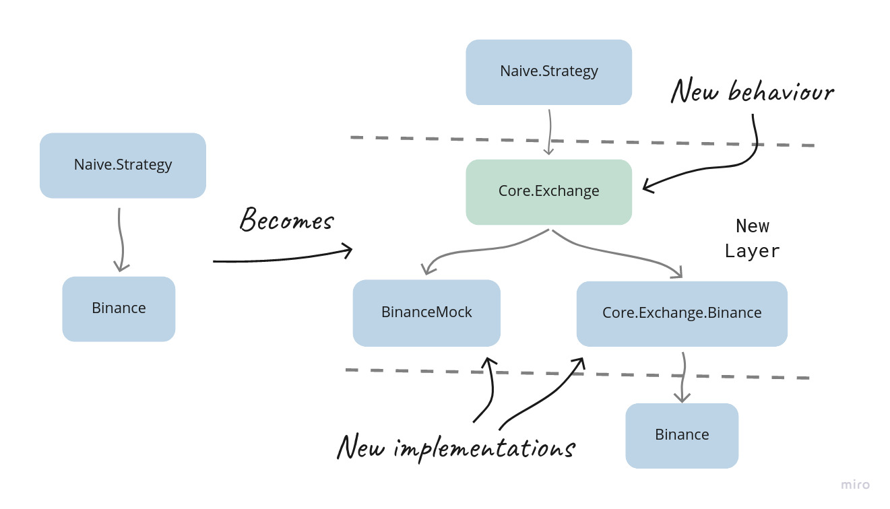

Chapter 20 Layers of abstraction
In the last chapter, we collapsed an entire supervision layer - one process per symbol, no Leader, no SymbolSupervisor. The code is simpler, the strategy is purer, and the trading logic lives where it belongs.
But we swept a testing problem under the rug. Our unit tests relied on Mox,
which pushed us into defining behaviours for third-party packages we don’t
control. That felt wrong at the time, and it still does. Now, with the Leader
gone and the @leader attribute removed, our mocking story is broken entirely.
In this chapter, we’ll confront that head-on. We’ll first walk the Mox path
to its logical conclusion - building a full Core.Exchange behaviour with
generic structs and multiple implementations - to understand exactly where it
leads and why it costs more than it’s worth. Then we’ll revert everything and
reach for a lighter tool: the Mimic package, which lets us mock modules
directly without forcing premature abstractions.
The takeaway won’t be “Mox bad, Mimic good.” It’ll be something more useful: know when an abstraction is earning its keep versus when it’s just tax you pay to make your test framework happy.
20.1 Objectives
- admitting the mistake
- abstracting the exchange
- mimicking the reality
- swapping back to attributes
20.2 Admitting the mistake
There comes a time when we need to admit to a mistake that crept in as this book was being written - one that was repeated throughout.
When we were using the Mox package, we were disappointed that most packages don’t provide behaviours
we could use in our tests(to mock the actual implementations).
To fix that, we were creating behaviours for 3rd party packages we are using, like Binance or even Ecto.Repo.
This approach felt weird, and it should, as that was not the intended usage of the Mox package.
Instead, we should introduce an additional layer(of abstraction) on top of the 3rd party modules we are using.
A typical example could be abstracting dealing with an exchange to a behaviour and
providing different implementations(for example, one could be wrapping the Binance module):

In the example above, we will introduce a new behaviour module called Core.Exchange that would
define the standard way to interact with any exchange. As this will be a generic exchange behaviour,
it needs to accept and return generic structs(we will need to define those as well).
We will also create a new Core.Exchange.Binance module(wrapping up the Binance module) and
update the BinanceMock module. Both will implement the Core.Exchange behaviour.
20.3 Abstracting the exchange
First, we will look at an intended use case for the Mox module, as mentioned above.
20.3.1 Defining the Core.Exchange behaviour
We will start by creating a new file /apps/core/lib/core/exchange.ex together with a new module inside it:
Now, based on how we currently interact with the Binance module inside the Naive.Strategy, we can define the following callback functions:
order_limit_buy/3 - almost the same as the Binance.order_limit_buy/4, just skipped the optional argument
# /apps/core/lib/core/exchange.ex
@callback order_limit_buy(symbol :: String.t(), quantity :: number(), price :: number()) ::
{:ok, Core.Exchange.Order.t()}
| {:error, any()}order_limit_sell/3 - almost the same as the Binance.order_limit_sell/4, just skipped the optional argument
# /apps/core/lib/core/exchange.ex
@callback order_limit_sell(symbol :: String.t(), quantity :: number(), price :: number()) ::
{:ok, Core.Exchange.Order.t()}
| {:error, any()}get_order/3 - the same as the Binance.get_order/3
# /apps/core/lib/core/exchange.ex
@callback get_order(
symbol :: String.t(),
timestamp :: non_neg_integer(),
order_id :: non_neg_integer()
) ::
{:ok, Core.Exchange.Order.t()}
| {:error, any()}All of the above callbacks rely on the Core.Exchange.Order struct, which we will add now inside the Core.Exchange module:
# /apps/core/lib/core/exchange.ex
defmodule Order do
@type t :: %__MODULE__{
id: non_neg_integer(),
symbol: String.t(),
price: number(),
quantity: number(),
side: :buy | :sell,
status: :new | :filled,
timestamp: non_neg_integer()
}
defstruct [:id, :symbol, :price, :quantity, :side, :status, :timestamp]
endThe above struct is a simplification of the Binance.Order struct limited to just the fields we are using in our strategy.
Additionally, we use the Binance module to fetch symbol filters inside the Naive.Strategy
(we actually fetch the whole exchange info and then dig inside to find our filters) - we will create a dedicated struct for those filters:
# /apps/core/lib/core/exchange.ex
# add below inside the Core.Exchange module
defmodule SymbolInfo do
@type t :: %__MODULE__{
symbol: String.t(),
tick_size: number(),
step_size: number()
}
defstruct [:symbol, :tick_size, :step_size]
end
@callback fetch_symbol_filters(symbol :: String.t()) ::
{:ok, Core.Exchange.SymbolInfo.t()}
| {:error, any()}The final usage of the Binance module comes from the seed scripts, where we fetch the exchange info just
to get the list of the supported currencies. We will make getting a list of supported currencies part of our behaviour:
# /apps/core/lib/core/exchange.ex
# add below inside the Core.Exchange module
@callback fetch_symbols() ::
{:ok, [String.t()]}
| {:error, any()}This finishes the definition of the Core.Exchange behaviour. It should consist of five callback functions(
fetch_symbols/0, fetch_symbol_filters/1, get_order/3, order_limit_buy/3 and order_limit_sell/3)
together with two structs(Order and SymbolInfo).
20.3.2 Implementation of the Core.Exchange.Binance module
As we defined the behaviour, we can now wrap the production implementation(the Binance module) inside a module that will implement that behaviour.
We will start by creating a new directory called “exchange” inside the apps/core/lib/core directory,
together with a new file called binance.ex. Inside it, we will define a module that will implement the Core.Exchange behaviour:
# /apps/core/lib/core/exchange/binance.ex
defmodule Core.Exchange.Binance do
@behaviour Core.Exchange
endNow we are obliged to implement all functions defined in the behaviour, starting with the fetch_symbols/0:
# /apps/core/lib/core/exchange/binance.ex
alias Core.Exchange
@impl Core.Exchange
def fetch_symbols() do
case Binance.get_exchange_info() do
{:ok, %{symbols: symbols}} ->
symbols
|> Enum.map(& &1["symbol"])
|> then(&{:ok, &1})
error ->
error
end
endAs we can see - the case statement wraps the call to the Binance module,
and either we evaluate further business logic or forward the error so the “consumer” of our library
can decide what to do with the error condition. This pattern will appear in all our functions
as the Core.Exchange.Binance module is our own “library” module.
Let’s continue with implementing the remaining functions defined in the behaviour:
# /apps/core/lib/core/exchange/binance.ex
@impl Core.Exchange
def fetch_symbol_filters(symbol) do
case Binance.get_exchange_info() do
{:ok, exchange_info} -> {:ok, fetch_symbol_filters(symbol, exchange_info)}
error -> error
end
end
defp fetch_symbol_filters(symbol, exchange_info) do
symbol_filters =
exchange_info
|> Map.get(:symbols)
|> Enum.find(&(&1["symbol"] == symbol))
|> Map.get("filters")
tick_size =
symbol_filters
|> Enum.find(&(&1["filterType"] == "PRICE_FILTER"))
|> Map.get("tickSize")
step_size =
symbol_filters
|> Enum.find(&(&1["filterType"] == "LOT_SIZE"))
|> Map.get("stepSize")
%Exchange.SymbolInfo{
symbol: symbol,
tick_size: tick_size,
step_size: step_size
}
endThe fetch_symbol_filters/1 function follows the previously discussed pattern.
The fetch_symbol_filters/2, on the other hand,
is a modified copy of the merge_filters_into_settings/3 function from the Naive.Strategy module
and is now returning the Exchange.SymbolInfo struct.
Another function to be implemented to fulfil the behaviour is get_order/3:
# /apps/core/lib/core/exchange/binance.ex
@impl Core.Exchange
def get_order(symbol, timestamp, order_id) do
case Binance.get_order(symbol, timestamp, order_id) do
{:ok, %Binance.Order{} = order} ->
{:ok,
%Exchange.Order{
id: order.order_id,
symbol: order.symbol,
price: order.price,
quantity: order.orig_qty,
side: side_to_atom(order.side),
status: status_to_atom(order.status),
timestamp: order.time
}}
error ->
error
end
end
defp side_to_atom("BUY"), do: :buy
defp side_to_atom("SELL"), do: :sell
defp status_to_atom("NEW"), do: :new
defp status_to_atom("FILLED"), do: :filledAs in the case of the previously implemented functions, the get_order/3 implementation wraps
the Binance’s function inside the case statement. To satisfy the Core.Exchange behaviour,
it needs to return the Exchange.Order struct - hence the conversion.
It also needs to convert the string side and status fields to atoms before assigning
them to the struct(that’s the role of the status_to_atom and side_to_atom helper functions).
The final two functions to be implemented will be the order_limit_buy/3 and order_limit_sell/3:
# /apps/core/lib/core/exchange/binance.ex
@impl Core.Exchange
def order_limit_buy(symbol, quantity, price) do
case Binance.order_limit_buy(symbol, quantity, price, "GTC") do
{:ok, %Binance.OrderResponse{} = order} ->
{:ok,
%Exchange.Order{
id: order.order_id,
price: order.price,
quantity: order.orig_qty,
side: :buy,
status: :new,
timestamp: order.transact_time
}}
error ->
error
end
end
@impl Core.Exchange
def order_limit_sell(symbol, quantity, price) do
case Binance.order_limit_sell(symbol, quantity, price, "GTC") do
{:ok, %Binance.OrderResponse{} = order} ->
{:ok,
%Exchange.Order{
id: order.order_id,
price: order.price,
quantity: order.orig_qty,
side: :sell,
status: :new,
timestamp: order.transact_time
}}
error ->
error
end
endThat finishes our first implementation of the Core.Exchange behaviour.
It will be used in production by our Naive.Strategy, but before we will update it,
we need to update the dependencies of the core application as now we are using the Binance module
inside the core application:
20.3.3 Updating the BinanceMock module to implement the Core.Exchange behaviour
The BinanceMock module must implement the Core.Exchange behaviour.
It will (at compile time) guarantee that both Core.Exchange.Binance and BinanceMock
share a common interface that can be used by the Naive.Strategy.
First, we will start by declaring that the BinanceMock actually implements the Core.Exchange behaviour:
# /apps/binance_mock/lib/binance_mock.ex
defmodule BinanceMock do
@behaviour Core.Exchange # <= addedNext, we can replace all the aliases to the Binance structs with a single alias to the Core.Exchange module:
Don’t forget to update all references to the Binance.Order with Exchange.Order module.
As the behaviour is now defined in the Core.Exchange module, we can remove all @type and @callback attributes.
Moving on, we will replace the get_exchange_info/0(together with its get_cached_exchange_info/0 helper function)
with fetch_symbols/0 and fetch_symbol_filters/1(and their helper functions):
# /apps/binance_mock/lib/binance_mock.ex
def fetch_symbols() do
case fetch_exchange_info() do
{:ok, %{symbols: symbols}} ->
symbols
|> Enum.map(& &1["symbol"])
|> then(&{:ok, &1})
error ->
error
end
end
def fetch_symbol_filters(symbol) do
case fetch_exchange_info() do
{:ok, exchange_info} ->
{:ok, fetch_symbol_filters(symbol, exchange_info)}
error ->
error
end
end
defp fetch_exchange_info() do
case Application.get_env(:binance_mock, :use_cached_exchange_info) do
true ->
get_cached_exchange_info()
_ ->
Binance.get_exchange_info()
end
end
defp get_cached_exchange_info do
File.cwd!()
|> Path.split()
|> Enum.drop(-1)
|> Kernel.++([
"binance_mock",
"test",
"assets",
"exchange_info.json"
])
|> Path.join()
|> File.read()
end
defp fetch_symbol_filters(symbol, exchange_info) do
# <= this is a copy of `Core.Exchange.Binance.fetch_symbol_filters/2` function
endThere are a few additional helpers above, and it got a bit long - let’s unpack it.
First, both the fetch_symbols/0 and fetch_symbol_filters/1 look very similar to the ones
we implemented for the Core.Exchange.Binance module. The main difference here is
that we support cached exchange info by introducing the fetch_exchange_info/0 function,
which branches out to either using the Binance module or the get_cached_exchange_info/0 function.
The latter was updated to return the raw data instead of the Binance.ExchangeInfo struct.
Next, there’s the get_order/3 function - as it’s working in the same way as per our behaviour, we will leave it as it is.
The final two functions to update will be the order_limit_buy/4 and order_limit_sell/4, which will now become three-argument functions:
# /apps/binance_mock/lib/binance_mock.ex
def order_limit_buy(symbol, quantity, price) do
order_limit(symbol, quantity, price, "BUY")
end
def order_limit_sell(symbol, quantity, price) do
order_limit(symbol, quantity, price, "SELL")
endIn the above functions, we simply skipped the fourth argument to fulfil the behaviour.
The changes to different structs will have a ripple effect in other parts of the BinanceMock module:
# /apps/binance_mock/lib/binance_mock.ex
def generate_fake_order(...) do
...
%Exchange.Order{
id: order_id,
symbol: symbol,
price: price,
quantity: quantity,
side: side_to_atom(side),
status: status_to_atom("NEW"),
timestamp: current_timestamp
} # <= keys updated & `.new` dropped
end
defp side_to_atom("BUY"), do: :buy # <= added
defp side_to_atom("SELL"), do: :sell # <= added
defp status_to_atom("NEW"), do: :new # <= added
defp status_to_atom("FILLED"), do: :filled # <= added
def handle_call(
{:get_order, symbol, time, order_id},
...
) do
...
|> Enum.find(
&(&1.symbol == symbol and
&1.timestamp == time and # <= field updated
&1.id == order_id) # <= field updated
)
end
def handle_info(
%TradeEvent{} = trade_event,
...
) do
...
filled_orders =
...
|> Enum.map(&Map.replace!(&1, :status, :filled)) # <= changed to atom
...
end
defp order_limit(symbol, quantity, price, side) do
...
{:ok, fake_order} # <= no need to convert between structs any more
end
# and finally ;)
# remove the `convert_order_to_order_response/1` function - not required anymoreThe above changes finish the modifications to the BinanceMock. The module now correctly implements the behaviour.
20.3.4 Updating the Naive.Strategy
We can now move on to the code that will use our implementations of the Core.Exchange behaviour - the Naive.Strategy module.
We will start by adding an alias to the Core.Exchange at the top of the module:
Next, we can rename the configuration based @binance_client to @exchange_client and update references to it throughout the module:
# /apps/naive/lib/naive/strategy.ex
@exchange_client Application.compile_env(:naive, :exchange_client)Besides the above, we are now relying on the generic structs, so we need to update all references
to the Binance.OrderResponse and Binance.Order modules with the Exchange.Order (including updating all field names) - for example:
# /apps/naive/lib/naive/strategy.ex
# from:
%Position{
buy_order: %Binance.OrderResponse{
order_id: order_id,
status: "FILLED"
},
sell_order: %Binance.OrderResponse{}
},
# to:
%Position{
buy_order: %Exchange.Order{ # <= struct updated
id: order_id, # <= key updated
status: :filled # <= updated to atom
},
sell_order: %Exchange.Order{}
}
# rename cheatsheet:
# order_id to id (do not use "global" file replace)
# orig_qty to quantity ("global" file replace safe)
# transact_time to timestamp ("global" file replace safe)
# "FILLED" to :filled ("global" file replace safe)As the behaviour’s interface(public functions) differs from the Binance module, we need to update all calls that we simplified:
# /apps/naive/lib/naive/strategy.ex
{:ok, %Exchange.Order{} = order} = @exchange_client.order_limit_buy(symbol, quantity, price)
...
{:ok, %Exchange.Order{} = order} =
@exchange_client.order_limit_sell(symbol, quantity, sell_price)As of now, we will deal only with the Exchange.Order structs instead of
a pair of Binance.OrderResponse and Binance.Order.
We can simplify the existing two clauses of broadcast_order/1 into a single one(and remove the convert_to_order/1 function):
# /apps/naive/lib/naive/strategy.ex
defp broadcast_order(%Exchange.Order{} = order) do
@pubsub_client.broadcast(
Core.PubSub,
"ORDERS:#{order.symbol}",
order
)
endWe also don’t need to convert Order to OrderResponse structs so we can update the clauses that fetch the buy and sell orders:
# /apps/naive/lib/naive/strategy.ex
defp execute_decision(
:fetch_buy_order,
...
) do
@logger.info("Position (#{symbol}/#{id}): The BUY order is now filled")
{:ok, %Exchange.Order{} = current_buy_order} =
@exchange_client.get_order(
symbol,
timestamp,
order_id
)
:ok = broadcast_order(current_buy_order)
{:ok, %{position | buy_order: current_buy_order}}
end
defp execute_decision(
:fetch_sell_order,
...
) do
@logger.info("Position (#{symbol}/#{id}): The SELL order is now filled")
{:ok, %Exchange.Order{} = current_sell_order} =
@exchange_client.get_order(
symbol,
timestamp,
order_id
)
:ok = broadcast_order(current_sell_order)
{:ok, %{position | sell_order: current_sell_order}}
endWe can go ahead and remove convert_order_to_order_response/1 function as it’s not used anymore.
The final change to the Naive.Strategy module will be to update the fetch_symbol_settings/1 function
(and remove the merge_filters_into_settings/3 function):
# /apps/naive/lib/naive/strategy.ex
def fetch_symbol_settings(symbol) do
{:ok, filters} = @exchange_client.fetch_symbol_filters(symbol)
db_settings = @repo.get_by!(Settings, symbol: symbol)
Map.merge(
filters |> Map.from_struct(),
db_settings |> Map.from_struct()
)
endThe function is now much more straightforward as we use the fetch_symbol_filters/1 function
implemented as a part of the Core.Exchange behaviour.
20.3.5 Updating the seed scripts
The other places we use the exchange are seed scripts that we need to update. First inside the Naive application:
# /apps/naive/priv/seed_settings.exs
exchange_client = Application.compile_env(:naive, :exchange_client)
...
{:ok, symbols} = exchange_client.fetch_symbols()
...
total_count = symbols
|> Enum.map(&(%{base_settings | symbol: &1}))We no longer use the binance_client but exchange_client instead -
in the same fashion as inside the Naive.Strategy module.
Both implementations provide the fetch_symbols/0 function, which returns a list of symbols -
hence the change inside the Enum.map/2 function.
We will follow up with changes to the seeding script of the Streamer application
(I will skip listing the changes here as they are the same as in the case of the Naive application).
At this moment, we can change the configuration to make the Naive.Strategy work:
# /config/config.exs
config :streamer,
exchange_client: BinanceMock, # <= key updated
config :naive,
exchange_client: BinanceMock, # <= key updated
# /config/prod.exs
config :naive,
exchange_client: Core.Exchange.Binance # <= key and module updated
config :streamer,
exchange_client: Core.Exchange.Binance # <= key and module updated
# /config/test.exs
config :naive,
exchange_client: Test.BinanceMock, # <= key updated20.3.6 Manual testing after the refactoring
We can now test that Naive.Strategy works:
$ iex -S mix
...
iex(1)> Streamer.start_streaming("XRPUSDT")
...
iex(2)> Naive.start_trading("XRPUSDT")
...
21:42:12.813 [info] Position (XRPUSDT/1662842530254): Placing a BUY order @ 0.35560000,
quantity: 562.00000000
21:42:15.280 [info] Position (XRPUSDT/1662842530254): The BUY order is now filled
21:42:15.281 [info] Position (XRPUSDT/1662842530254): Placing a SELL order @ 0.35580000,
quantity: 562.00000000
21:42:15.536 [info] Position (XRPUSDT/1662842530254): The SELL order is now filled
21:42:15.593 [info] Position (XRPUSDT/1662842530254): Trade cycle finishedThe above output confirms that we have a full working trading flow using either Core.Exchange.Binance or BinanceMock.
20.3.7 Storing the data
As we are now using generic structs like the Core.Exchange.Order, all data storage-related code needs to be updated.
We will start by updating the migration script to match our simplified data model:
# /apps/data_warehouse/priv/repo/migrations/20210222224522_create_orders.exs
def change do
create table(:orders, primary_key: false) do
add(:id, :bigint, primary_key: true)
add(:symbol, :text)
add(:price, :text)
add(:quantity, :text)
add(:side, :text)
add(:status, :text)
add(:timestamp, :bigint)
timestamps()
end
endA lot of fields got removed/renamed, including the primary key. We will follow up by updating the schema for that table:
# /apps/data_warehouse/lib/data_warehouse/schema/order.ex
@primary_key {:id, :integer, autogenerate: false} # <= column updated
schema "orders" do
field(:symbol, :string)
field(:price, :string)
field(:quantity, :string)
field(:side, :string)
field(:status, :string)
field(:timestamp, :integer)
timestamps()
endThe schema was updated to mirror the new shape of the orders db table.
We can now progress to the Worker, where we will start to use the Core.Exchange based structs:
# /apps/data_warehouse/lib/data_warehouse/subscriber/worker.ex
alias Core.Exchange # <= alias added
...
def handle_info(%Exchange.Order{} = order, state) do
data =
order
|> Map.from_struct()
|> Map.update!(:price, &Float.to_string/1)
|> Map.merge(%{
side: atom_to_side(order.side),
status: atom_to_status(order.status)
})
struct(DataWarehouse.Schema.Order, data)
|> DataWarehouse.Repo.insert(
on_conflict: :replace_all,
conflict_target: :id # <= column updated
)
...
defp atom_to_side(:buy), do: "BUY"
defp atom_to_side(:sell), do: "SELL"
defp atom_to_status(:new), do: "NEW"
defp atom_to_status(:filled), do: "FILLED"The Worker will now pattern match on the Core.Exchange.Order struct instead of Binance.Order as before.
Inside the callback, we simplified the mapping to the schema struct and updated the conflict to the renamed id column.
Finally, we added the helper functions to convert status and side atoms to strings.
20.3.8 The Mox approach summary
We didn’t yet look into updating our tests, but instead of focusing on that, we will chat about our implementation.
First, it’s worth stressing that it required multiple changes to many parts of the system spanning from the Naive application
through Streamer (seeding) and ending in the DataWarehouse application.
More importantly, we needed to define a behaviour. It gives us a compile-time guarantee, but on the other hand, we were pushed to define it very early.
Let me explain.
Up to this moment, we have been using only the Binance module.
We didn’t have an opportunity to work with other modules/exchanges.
In fact, we didn’t want to create an Exchange level abstraction.
We were happy with using the Binance module, and we added the behaviour
just to be able to use the Mox package to mock it inside our tests.
All of this feels like a really heavy over-engineering just to be able to test.
Furthermore, as we defined the behaviour, we needed to define the generic structs that we based on the ones from the Binance module.
We have never seen examples of structs from other packages,
so we took only fields that we are using in our strategy to limit the possibility of missing data from another exchange in the future.
The knock-on effect is twofold: we are already missing valuable data in the database,
and adding any new exchanges in the future may require updates to the behaviour,
its existing implementations, and most of the code that uses it(like the Naive.Strategy).
Additionally, we returned the Binance’s error messages straight to the user of our abstraction(Naive.Strategy).
We should be converting those to generic errors, but we don’t have a clue about other exchanges and the errors they could raise.
At this moment, abstracting our code into behaviour+implementations is uneducated over-engineering and simply asking for troubles in the future.
What’s the alternative?
The first thing that comes to mind would be to look for some “standard” that could be leveraged to build our behaviour/define structs. For cryptocurrency exchanges, that will be “CCXT” - it’s an open-source “library” available for Python, JavaScript and PHP.
We could go further and look for an Elixir implementation of the CCXT package and find the package named ccxtex.
It’s a wrapper around the JavaScript version of the CCXT package.
Using the above(either the ccxtex package or ccxt as a “blueprint”)
instead of trying to figure out our own behaviour based on our limited knowledge about exchanges would most certainly
let us avoid continuous updates to our code.
Those updates, coupled with the fact that we would add the behaviour just to be able to test the implementation,
put usage of the Mox package in serious doubt.
The source code up to this moment can be found at Github - chapter_20_mox.
We will stop here and revert to the source code from the end of the 19th chapter. Instead of leaving something we are not prepared to continue with, we will look into alternative ways to test our strategy.
20.4 Mimicking the reality
With a clean slate, let’s take a completely different approach.
Instead of building behaviours and abstractions just to satisfy our test framework,
we’ll use the Mimic package, which lets us mock any module directly - no behaviours required.
Let’s kick this off by swapping the mox package to the mimic package in the dependencies of the Naive application:
Don’t forget to run mix deps.get to resolve the dependencies.
20.4.1 Updating the Naive.Strategy
Before we dive into writing new tests, we can update the Naive.Strategy module.
The mimic module doesn’t require us to inject dependencies into module attributes based on config, so we can remove them:
# /apps/naive/lib/naive/strategy.ex
# remove the below lines
@binance_client Application.compile_env(:naive, :binance_client)
@logger Application.compile_env(:core, :logger)
@pubsub_client Application.compile_env(:core, :pubsub_client)
@repo Application.compile_env(:naive, :repo)We will switch back to using modules’ names as before. We will update all references to attributes throughout the module with corresponding hardcoded module names:
# /apps/naive/lib/naive/strategy.ex
# change @logger to Logger
# change @binance_client to Binance
# change @pubsub_client to Phoenix.PubSub
# change @repo to RepoAs we are pointing to Repo instead of Naive.Repo, we need to add an alias at the top of the module:
[Note: At this moment, we will apply the above changes to the Indicator.Ohlc.Worker and Indicator.Ohlc(
apps/indicator/lib/indicator/ohlc/worker.ex and apps/indicator/lib/indicator/ohlc.ex) and the Naive.Trader(
apps/naive/lib/naive/trader.ex
) to avoid breaking the application when we will clean
up the config in the next step.]
That finishes our conversion to hardcoded module names. As we are no longer basing our module on the configuration,
we can remove all redundant configuration keys from the main config.exs file:
# /config/config.exs
config :core, # <= remove
logger: Logger, # <= remove
pubsub_client: Phoenix.PubSub # <= remove
config :streamer,
binance_client: BinanceMock, # <= remove
...
config :naive,
binance_client: BinanceMock, # <= remove
repo: Naive.Repo, # <= remove
...We can now move on to figure out how we are going to test it.
20.4.2 Testing the Naive.Strategy
First, we can remove the existing unit tests(apps/naive/test/naive/trader_test.exs) as they are not applicable anymore.
Next, we will create a new file apps/naive/test/naive/strategy_test.exs with a skeleton of a test:
# /apps/naive/test/naive/strategy_test.exs
defmodule Naive.StrategyTest do
use ExUnit.Case, async: true
use Mimic
alias Core.Struct.TradeEvent
alias Naive.Strategy
# we will add our tests here
endAs we will stub dependencies using mimic, we need to use it inside the test module.
We will be testing the primary entry function, the Naive.Strategy.execute/3,
where we will first focus on placing a buy order scenario:
# /apps/naive/test/naive/strategy_test.exs
@tag :unit
test "Strategy places a buy order" do
# we will put our code here
endThe simplest scenario will be to pass hardcoded settings, a fresh position(based on those settings) and a trade event(that will trigger the buy order):
# /apps/naive/test/naive/strategy_test.exs
settings = %{
symbol: "ABC",
chunks: "5",
budget: "200",
buy_down_interval: "0.2",
profit_target: "0.1",
rebuy_interval: "0.5",
tick_size: "0.000001",
step_size: "0.001",
status: :on
}
{:ok, new_positions} = Naive.Strategy.execute(
%TradeEvent{
price: 1.00
},
[
Strategy.generate_fresh_position(settings)
],
settings
)Now, the above call to the Naive.Strategy.execute/3 will cause the Binance.order_limit_buy/4,
Phoenix.PubSub.broadcast/3 and Logger.info/1(we will skip this one and get back to it later) functions to be called.
We need to mock those functions at the beginning of our test before calling the Naive.Strategy.execute/3 function:
# /apps/naive/test/naive/strategy_test.exs
expected_order = %Binance.OrderResponse{
client_order_id: "1",
executed_qty: "0.000",
order_id: "x1",
orig_qty: "50.000",
price: "0.800000",
side: "BUY",
status: "NEW",
symbol: "ABC"
}
Binance
|> stub(
:order_limit_buy,
fn "ABC", "50.000", 0.8, "GTC" -> {:ok, expected_order} end
)
Phoenix.PubSub
|> stub(
:broadcast,
fn _pubsub, _topic, _message -> :ok end
)We can use the expected_order above to assert that the Naive.Strategy.execute/3 returned the correct value -
the buy_order field should hold the same data as the expected_order. We can add the below assertions at the end of the test:
# /apps/naive/test/naive/strategy_test.exs
assert (length new_positions) == 1
%{buy_order: buy_order} = List.first(new_positions)
assert buy_order == expected_orderThat finishes the test implementation, but before we will be able to use the mimic module,
we need to prepare modules so we can stub them inside tests - here are the new contents of the test helper file:
# /apps/naive/test/test_helper.exs
Application.ensure_all_started(:mimic)
Mimic.copy(Binance)
Mimic.copy(Phoenix.PubSub)
ExUnit.start()We removed all references to the mox module and replaced them with calls to the Mimic.copy/1 function.
We are now ready to run our new test:
$ mix test.unit
...
21:49:39.737 [info] Position (ABC/1675460979732): Placing a BUY order @ 0.8, quantity: 50.000
.
Finished in 0.2 seconds (0.2s async, 0.00s sync)
1 tests, 0 failures (1 excluded)As we can see, we successfully mocked the Binance and Phoenix.PubSub modules.
We can also see that we are getting log messages that we will deal with next.
20.4.3 Logging elephant in the room
As we moved back to using the Logger module instead of some dummy implementation,
we are now back to square one, seeing logs in our tests. We could go on the route of mocking the Logger module using the Mimic,
but actually, there’s a better way to deal with logs in the tests.
As ExUnit starts, it allows us to pass options that will modify its behaviour. One of those is capture_log,
which, when set to true, will cause ExUnit to hide all log messages - let’s update the test helper script to enable this feature:
Let’s rerun our tests to see the difference:
$ mix test.unit
...
.
Finished in 0.2 seconds (0.2s async, 0.00s sync)
1 tests, 0 failures (1 excluded)We can see that the ExUnit output is now free of any logs.
But what if we would like to assert the logged message? We were able to do that using the mox package,
as we were mocking and asserting log messages’ contents inside those mocks.
ExUnit provides a helper function for that case as well. We will modify our test to capture the log inside it and assert that it logs the correct value (the price of $0.8):
# /apps/naive/test/naive/strategy_test.exs
import ExUnit.CaptureLog # <= import logging capturing functionality
...
test "Strategy places a buy order" do
...
{{:ok, new_positions}, log} =
with_log(fn ->
Naive.Strategy.execute(
%TradeEvent{
price: 1.00
},
[
Strategy.generate_fresh_position(settings)
],
settings
)
end)
assert log =~ "0.8"In the above code, we wrapped our call to the Naive.Strategy.execute/3 into an anonymous function
that we passed as an argument to the with_log/1 function. The with_log/1 function returns a tuple containing
the result of the passed function and the generated log message(s).
We can then assert that the logged message contains the expected value, strengthening our test. We can now rerun our unit test:
$ mix test.unit
...
.
Finished in 0.2 seconds (0.2s async, 0.00s sync)
1 tests, 0 failures (1 excluded)It’s worth noting that we were able to capture the log message even with global capture_log enabled(inside the test helper when starting ExUnit). This gives us ultimate flexibility. None of the logs are displayed, although whenever we need, we can always capture logs inside test cases on a test-by-test basis.
That would wrap up the writing unit tests part. But how will this work with running our code locally(or in “production”) or running integration tests?
20.5 Swapping back to attributes
We need to have a way to swap Binance’s implementation between dev/test/integration and prod environments.
We can’t use the mimic package to swap the implementation as this is a “running” mode, not some tests.
Please note that most of the applications won’t need to change the implementation based on the environment as the 3rd party library/package itself will provide some flags to enable/disable the functionality (like sending emails to newly registered users).
Let’s get back to the Naive.Strategy module, where we will bring back the attribute-based @binance_client:
# /apps/naive/lib/naive/strategy.ex
@binance_client Application.compile_env(:naive, :binance_client)
...
@binance_client.order_limit_buy(...)
...
@binance_client.order_limit_sell(...)
...
@binance_client.get_order(...)
...
@binance_client.get_order(...)
...
@binance_client.get_exchange_info(...)We need to update all references to the Binance module’s functions to use the @binance_client module’s attribute.
20.5.1 Config files
We will now move to config files, where we will re-add the binance_client configuration.
As previously we will want the BinanceMock to be used everywhere besides production:
# /config/config.exs
config :streamer,
binance_client: BinanceMock # <= add
config :naive,
binance_client: BinanceMock, # <= add
leader: Naive.Leader, # <= remove
# /config/prod.exs
# stays as it was - pointing to the `Binance` module
# /config/test.exs
# remove everything besides the `import`It’s important to understand that we don’t need to configure the binance_client inside the test configuration.
As we now utilise the mimic package, we can drive mocking from the test level.
The knock-on effect of bringing back the environment driven @binance_client is that now we will
need to mimic the BinanceMock module instead of Binance for our unit tests. To fix that, we need to update the test helper:
and the unit test:
We needed to change the above as now, in the case of dev and integration, we are using the BinanceMock.
After applying the above changes, we can now run the unit tests:
$ mix test.unit
...
.
Finished in 0.2 seconds (0.2s async, 0.00s sync)
1 tests, 0 failures (1 excluded)As well as run the integration tests:
$ MIX_ENV=integration mix test.integration
.
Finished in 7.2 seconds (0.04s async, 7.1s sync)
1 tests, 0 failures (1 excluded)And finally, we are able to run the project:
20.6 Final thoughts
We went in a full circle in this chapter - and that was the point. Here’s what we covered:
- Built a complete
Core.Exchangebehaviour with genericOrderandSymbolInfostructs - Implemented that behaviour in both
Core.Exchange.BinanceandBinanceMock - Updated the
Naive.Strategy, seed scripts, andDataWarehouseto use the abstraction - Admitted it was premature over-engineering and reverted everything
- Replaced
MoxwithMimic, which let us mock modules without behaviours - Brought back the
@binance_clientattribute for environment-based implementation swapping - Captured and asserted log messages using ExUnit’s built-in
capture_logandwith_log/1
The pattern worth remembering here is the layering decision itself:
- If you need to swap implementations between environments (dev/test/prod), use compile-time module attributes (
@binance_client) - If you need to mock dependencies in tests, prefer
MimicoverMoxunless you already have a natural behaviour - If you genuinely have multiple implementations of a concept (not just for testing), then define a behaviour - but wait until you’ve seen at least two real implementations before committing
It’s worth being honest about the trade-offs of each approach:
Moxwith behaviours gives you compile-time contract guarantees but forces you to abstract before you understand the domain. In our case, we definedCore.Exchangestructs based on a single exchange - that’s guessing, not designingMimicis lightweight and test-friendly but offers no compile-time safety. If the real module’s API changes, your stubs will silently pass until they hit production- Module attributes are the simplest swap mechanism but they’re resolved at compile time, which means you can’t change implementations at runtime
The biggest lesson from this chapter isn’t about any specific package.
It’s about timing. Abstractions introduced too early calcify around
assumptions you haven’t validated. The Core.Exchange behaviour we built
was structurally correct but informationally bankrupt - we’d never seen a
second exchange, so every design decision was a guess dressed up as architecture.
So, What’s Next?
We have a clean testing setup now, but we’ve barely used it. Our strategy has
a lot of pure logic that we haven’t covered with tests yet. In the next chapter,
we’ll write tests for generate_decision/4 and the other pure functions to show
just how much coverage you get for free when your business logic doesn’t touch
the outside world.
[Note] Please remember to run mix format to keep things nice and tidy.
The source code for this chapter can be found in the book’s source code repository (branch: chapter_20).